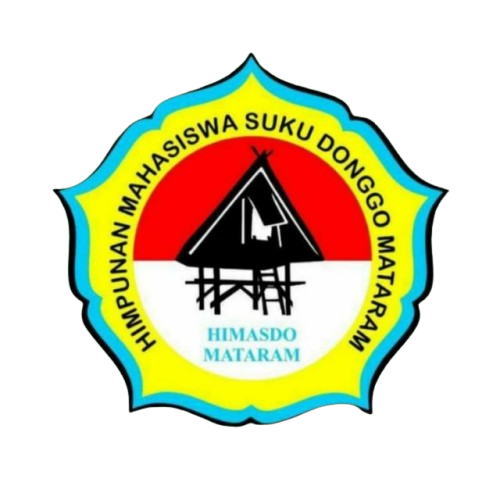

Organisasi & Komunitas
Memiliki pola konsisten sebagai "Double Role": Bergerak ekstensif di sisi Analitik/Edukasi (Engineering) sekaligus luwes memimpin manajemen audiens.
Himpunan Mahasiswa Islam
Kader Komisariat KH.Ahmad DahlanOkt 2025 - Sekarang
Himpunan Mahasiswa Islam (HMI) adalah organisasi mahasiswa tertua dan terbesar di Indonesia yang berasaskan Islam, didirikan di Yogyakarta pada 5 Februari 1947 oleh Lafran Pane dan 14 mahasiswa lainnya. Sebagai organisasi ekstra kampus, HMI bertujuan membina insan akademis, pencipta, dan pengabdi yang bernafaskan Islam, serta bertanggung jawab atas terwujudnya masyarakat adil dan makmur

Sekbid Kaderisasi Himasdom
Menjemput teman-teman kader maba baru untuk mampu menciptakan pemimpin masa depanjuni 2025 - Sekarang
Mendefinisikan & membimbing mahasiswa dalam proses kaderisasi, memastikan mereka memahami visi, misi, dan nilai-nilai organisasi .
Teknisi Jaringan Di Universitas Bumigora
Manajer KontenJun 2025 - Sekarang
Bertanggung jawab mengelola jaringan dan mengembangkan jaringan visual guna memperluas jangkauan jaringan kampus.
Social Media Manager di English Study Club
Strategi PublikJun 2025 - Sekarang
Mengembangkan strategi publikasi digital berbasis data untuk meningkatkan engagement audiens.